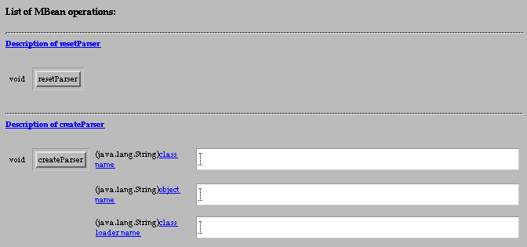

Tutorial
|
JMX Reference Implementation Tutorial |
![[ Previous ]](images/leftarrow.gif) The Agent View |
![[ Contents ]](images/uparrow.gif) Contents |
![[ Next ]](images/rightarrow.gif) Agent Administration |
Action: In the Agent view, click on the name of the HTML adaptor MBean:name=html,port=8082in theAdaptordomain. This will bring up the MBean view of this object.An MBean (managed bean) is a Java object that follows the design patterns set forth in the instrumentation level of the JMXTM specification. An MBean can represent a device, an application, or any resource that needs to be managed. MBeans expose a management interface: a set of readable and/or writable attributes and a set of invokable operations, along with a self-description. The management interface does not change throughout the life of an MBean instance.
According to the JMX specification, MBeans can be either standard or dynamic. A standard MBean is one that statically defines its management interface through the names of the methods it contains. A dynamic MBean implements a specific Java interface and reveals its attributes and operations at runtime. Since the HTML adaptor just displays their management interface, these two types are almost indistiguishable in the MBean view (they are compared in Standard and Dynamic MBeans).
The MBean view has two functions: it presents the management interface of the MBean and it lets you interact with its instance. The management interface of an MBean is given through the name of the attributes, the operation signatures, and a self-description. You can interact with the MBean by reloading its attribute values, setting new values or invoking an operation.
The MBean view can be divided into three main parts:
- The header with a description
- The table of attributes
- The operations
The Header and Description
The top part of the page contains the description of the MBean and some controls for managing it:
The MBean name is the full object name of this MBean instance. The first part up to the colon is the domain, the rest is made up of key
=value pairs. These pairs must be unique within a given domain and should help identify the MBean to a human reader. It is up to the person or application registering the MBean to assign it a meaningful and correct object name. Object names are further described in the Agent Administration topic.The MBean Java class is the full class name for the Java object of which this MBean is an instance.
The reload controls include a text field for entering a reload period and a manual "Reload" button. Originally, the reload period is set to zero indicating that the contents of the MBean view are not refreshed. Clicking the reload button forces the page to reload, thereby updating all of the attribute values displayed. If you have entered a reload period, clicking the button begins automatic reloading with the given period. The reload period must be greater than five seconds.
Action: Enter a reload period of five and click the "Reload" button. Every five seconds the page will blink as it reloads. Now open another connection to the HTML adaptor and observe the new values for the "ActiveClientCount" and "LastConnectedClient" attributes. To do this, load the URL http://localhost:8082/ and then use the "Previous Page" function of your browser to get back to the tutorial. Due to the way the adaptor works, you might have try several connections before you see the attribute values change.
The reload period will be reset to zero the next time you go back to the agent view and return to this MBean.
The "Unregister" button is a shortcut for removing this MBean from the Agent. Unregistering is covered in the Agent Administration topic.
The MBean description text provides some information about the MBean. Because standard MBeans are statically defined, they cannot describe themselves, and the MBean server provides a generic text. Dynamic MBeans, however, can provide their own description string at runtime and are even required to, according to the JMX specification. Except for the class name, this is the only way to tell standard and dynamic MBeans apart in the MBean view.
The Table of Attributes
The second part of the MBean view is a table containing all attributes exposed by the MBean. For each attribute, this table lists its name, its Java type, its read/write access and a string representation of its current value.
The name of each attribute is a link that opens a dialogue box containing the description for this attribute. Like the MBean description, attribute descriptions can only be provided by dynamic MBeans. The MBean server inserts a generic message for standard MBean attributes.
Action: Click on the attribute names of the HTML adaptor to read their description. Since the HTML adaptor is implemented as a dynamic MBean, its attribute descriptions are meaningful. Due to the use of JavaScriptTM commands, these pop-up windows might not be available on browsers that are not JavaScript-enabled.
Writable attributes have a text field for entering new values. To set the value of a writable attribute, enter or replace its current value in the text field and click the "Apply" button at the bottom of the attributes table. Despite appearances, you cannot modify the attributes of the HTML adaptor, we will see why in the section on Instantiating and Managing MBeans.
The Operations
The last part of the MBean view contains all of the operations exposed by the MBean. Each operation in the list is presented like a method signature: there is a return type, then a button with the operation name, and if applicable, a list of parameters, each with their type as well.
Above each operation is a link to its description. Parameter names are also clickable links which open a window with a description text. Again, descriptions are only meaningful for dynamic MBeans.
To invoke an operation, you would fill in any parameter values in the corresponding text fields and then click the operation's button. The HTML adaptor would then display a page with the result of the operation: the return value if successful or the reason the operation was unsuccessful.
We will not invoke any operations on the HTML parser until a brief explanation in Instantiating and Managing MBeans. If we stopped the HTML adaptor or blocked it with an error, there would no longer be any way to connect with a browser: we would have to stop the base agent and restart it.
Action: Go back to the agent view by clicking the link near the top of the MBean view page.
|
The Agent View |
Contents |
Agent Administration |
Copyright 2000-2003
Sun Microsystems, Inc.,
All rights reserved.